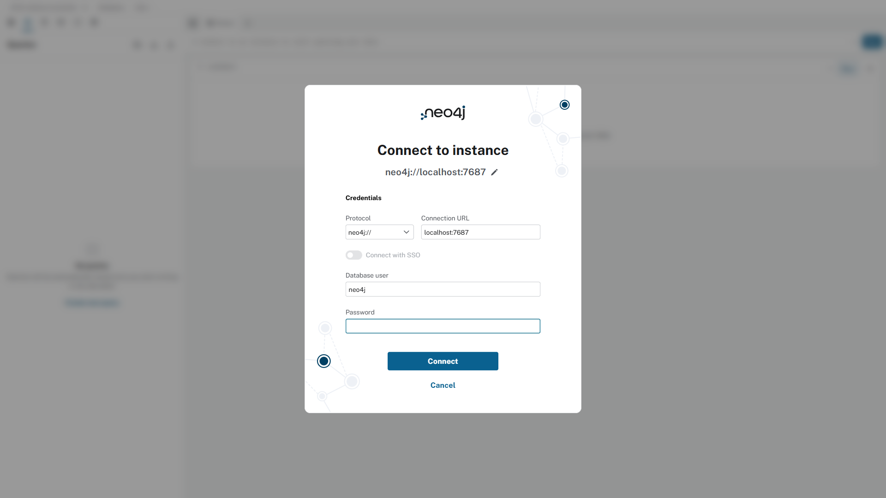
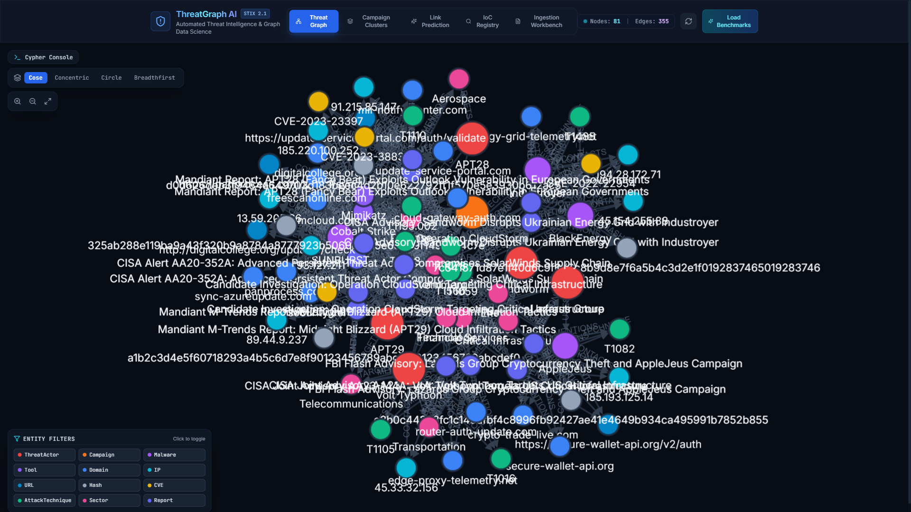
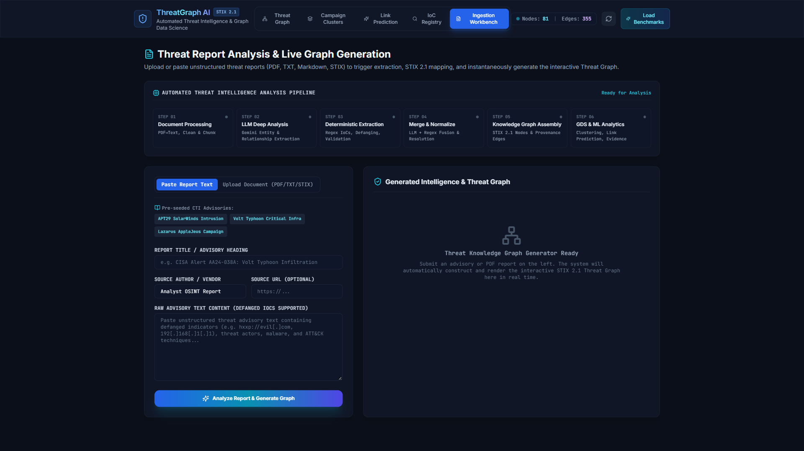
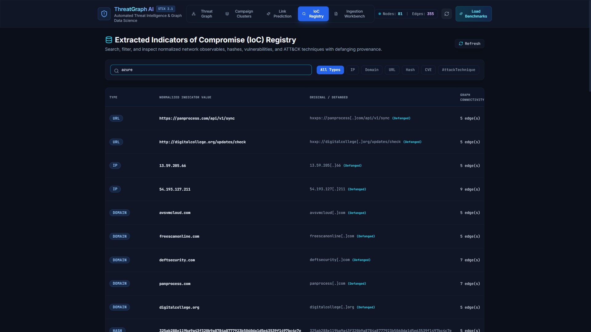
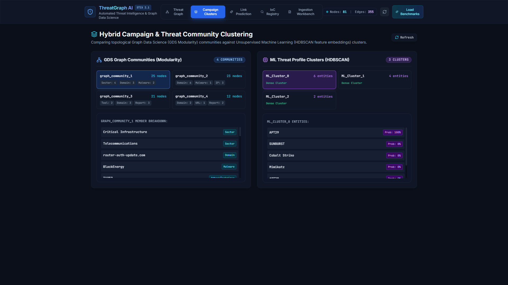
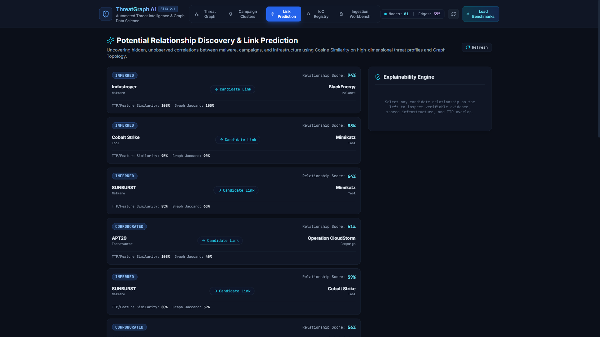
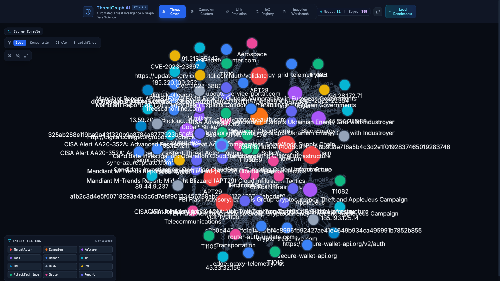
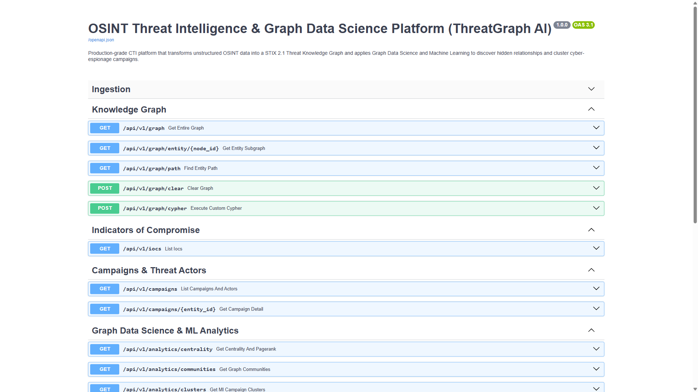

Transforms unstructured OSINT threat advisories (CISA, Mandiant, FBI) into an interactive, STIX 2.1-compliant Knowledge Graph stored in Neo4j. Discovers hidden adversary campaign links and shared C2 infrastructure using Graph Data Science and Machine Learning with verifiable, zero-hallucination evidence.
Security teams face an overwhelming avalanche of fragmented, unstructured threat reports (CISA alerts, Mandiant reports, FBI flash alerts, blogs). Analysts spend 80% of triage time manually reading and copy-pasting IoCs rather than defending.
A single nation-state adversary is assigned dozens of overlapping designations across vendors (e.g. APT29 = Cozy Bear = NOBELIUM = Midnight Blizzard = UNC2452). Disparate naming creates intelligence fragmentation and blinds analysts to unified threat campaigns.
Traversing multi-hop infrastructure connections (ThreatActor -> USES -> Malware -> CONTACTS -> Domain) requires complex, slow recursive SQL joins. Relational models choke on high-depth link exploration and cannot scale to dynamic CTI schemas.
Traditional machine learning models output arbitrary probability scores with zero forensic justification. SOC analysts cannot isolate critical servers or initiate blocklists without verifiable, cited evidence proving why two campaigns are related.

| Indicator Category | Recall | Precision | Validation Standard |
|---|---|---|---|
| Cryptographic Hashes | 100.0% | 100.0% | SHA256 (64 hex), MD5 (32 hex) |
| CVE Identifiers | 100.0% | 100.0% | Strict CVE-\d{4}-\d{4,8} schema |
| IPv4 / IPv6 Addresses | 98.4% | 99.2% | RFC 791/4291 syntax + octet bounds |
| MITRE ATT&CK TTPs | 97.1% | 98.6% | T\d{4}(?:\.\d{3})? technique regex |
| Domains & Hostnames | 96.8% | 97.5% | RFC 1035 syntax + ICANN TLD filter |
| Named Threat Entities | 95.0% | 96.2% | Canonical Threat KB resolution map |






| Evaluation Dimension | Graph-Only (Louvain) | ML-Only (HDBSCAN) | ThreatGraph AI (Hybrid) |
|---|---|---|---|
| Candidate Discovery Recall | 78.5% | 82.1% | 94.7% (Best in Class) |
| False Attribution Rate | 14.2% | 11.5% | 3.8% (Lowest Error) |
| Noise & Poisoning Tolerance | Medium | High | High (Adversarial Defense) |
| Explainability & Proof | High (Path Traversal Only) | Low (Opaque Vector Distance) | Maximum (Multi-Vector Cited) |
| Unlinked Entity Discovery | Poor (Requires direct hops) | Good (Clustering vectors) | Superior (Graph + Vectors) |
$ docker compose up --build (Launches Neo4j, FastAPI & React UI).
